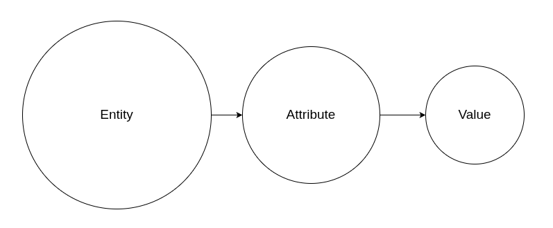
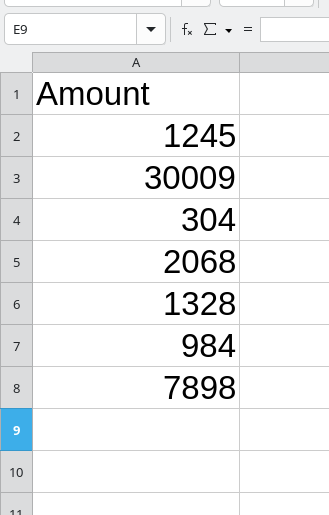

Part 1: Data Isn't Reality
Jeff Uren ★ 2026-07-06
I'm a needler. I like to take an idea, then keep worrying at it from different angles with a pin until it ultimately becomes obvious, gives up all it's little secrets to me. In particular, I need to know how things fail, fall apart, or crumble under pressure. What it fundamentally is and what it isn't.
This is a series of articles about building a shared understanding of data, ontologies, and data architecture (UDA) in a large organisation that struggles with meaning.
All models are wrong, but some are useful.
There are ideas that seem so obvious we stop noticing them and the notion of "data" is one of those ideas.
We spend our lives surrounded by it. We build databases, pipelines, dashboards, reports, warehouses, lakes, marts, APIs, spreadsheets, and machine learning models. We talk endlessly about "using the data", "moving the data", "governing the data", and "making data-driven decisions".
But no one ever really stops and asks: What is data?
And I don't mean what format it's in, or where it's stored, or even which system produced it.
What in tarnation are you on about?
I think we've accidentally trained ourselves to answer the wrong question.
When most people talk about data, they picture tables, columns, files, or dashboards. Engineers think about schemas. Analysts think about measures. Database admins think about indexes. AI companies think about tokens
They're all looking at the same representation, rather than what's being represented.
We need to pick away at that difference.
A number isn't data
Imagine I write the number 42 on a piece of paper and hand it to you.
That isn't data, it's just a number, a value.
Now imagine I tell you it's someone's age.
Now it has meaning. Except it still doesn't really. Whose age? When? Measured by whom? Estimated? Recorded yesterday? Recorded ten years ago?
Already we've started asking questions that have nothing to do with databases, but the number hasn't changed, the meaning has.
Data isn't just a recorded value. A recorded value only becomes data when it claims to describe something in the real world.
Representation, not reality
For a long time I worked on disease surveillance systems across parts of Africa, the Middle East, and the Pacific. Every morning I would wake up to reports showing outbreaks, mortality, vaccinations, suspected cases, confirmed cases, supply shortages, and population movements.
A reported case wasn't a child lying on a clinic bed, a mortality statistic wasn't a family, a vaccination count wasn't someone carrying their child for miles to reach the nearest clinic.
The data represented those things, sometimes accurately, sometimes poorly, sometimes not at all.
The job was never simply collecting numbers. It was understanding what those numbers claimed to represent, and how faithfully they reflected reality.
There are a lot of hard lessons I learned out of that work, ones I carry with me to this day. Only one of them is that data isn't reality, it's a description of reality, and those are very different things.
A more deliberate definition
Before we can start down our wider journey, we need to establish a groundplane. I've already done a lot of talking about data in very emotional terms but I've not done a lot to agree on what data actually is.
We're going to be coming at data from a few different perspectives, so I want us all to be on the same page, speaking the same dialect before we start into it.We have a tendency to label a lot of things "data" that aren't, or to overload the term with so many different meanings that it becomes almost useless.
Data is representation, not the thing itself
It's a recorded value that stands in for some real-world fact, entity, or event.
Data requires three ingredients
Like fire (air, fuel, and heat), data requires three primary aspects in order to exist:
- An attribute - what's being described
- An entity or event - what it belongs to
- A value - the recorded state (usually at some point in time)

Data only has meaning in relation to reality
A number or symbol isn't "data" until it's tied to something it's meant to represent.
Quality
And finally, a good rule to remember is that data quality is really a question of correspondence. It's how well the recorded value matches the real-world state that it claims to reflect.
That's our definition of data moving forward. You can use it too if you want. I won't complain.
Meaning lives outside the database
Suppose I show you a column called:

amountWhat is it?
- Awarded amount?
- Paid amount?
- Requested amount?
- Remaining budget?
- Original currency?
- GBP?
- Millions?
- Thousands?
A database can't answer those questions for you, and neither can SQL, or parquet, or iceberg. Those systems are excellent at storing values.
They are deliberately indifferent to what those values mean.
We've become so accustomed to treating storage as understanding that we generally mistake the existence of data for the existence of knowledge. And the truth is they're not the same thing.
Every organisation has its own language
Walk into any organisation and you'll hear people using terms they all seem to understand.
- Grant
- Application
- Research Organisation
- Project
- Employee
- Payment
- Funding Round
- Programme
They sound obvious until two departments use the same word differently. Or worse, different words mean the same thing.
A lot of organisations don't really have a technology problem. They have a language problem and Wellcome is no different.
Everyone agrees they're talking about "applications" but they don't necessarily agree on what an application actually is.
When those disagreements stay in people's heads, our software quietly inherits them.
That's where inconsistent reports come from, or conflicting dashboards, or AI confidently giving two different answers to the same question.
This all happens because meaning is just, never made explicit, anywhere.
AI makes this more important, not less
Large language models are astonishingly good at recognizing patterns. They're also astonishingly willing to invent connections where none exist.
If you point an AI model at a warehouse full of tables and ask questions about your organisation, it has to infer meaning from names, structures, examples, and statistical patterns.
Sometimes it gets it right, a lot more often it doesn't. We tried it, and it was bad. Really bad.
The dangerous part of that is that both answers sound equally convincing, but that's not really an AI problem. It's a semantics problem.
If we never tell our systems what our organisation means by "Grant", "Application", or "Awarded Amount", we shouldn't be surprised when they guess.
Humans have been guessing for years, guess what? Now the computers are joining in on the fun.
Before we build anything...
This is where I think we've been looking at data in a backwards horrible way, we usually design things around storage, tables, schemas, files, pipelines, warehouses. Only after the fact do we start asking what everything actually means.
I'm going to argue across these articles, the order should be reversed.
Before we decide how to store information, we first need to agree on what exists.
- What kinds of things matter?
- What do we know about them?
- How do they relate to one another?
- What language do we use to describe them?
It's at that point we start to worry over where the values actually live, the storage isn't the understanding, it's just somewhere we put the evidence.
In the next article we'll start building the language, but not for a database, for the organisation itself.